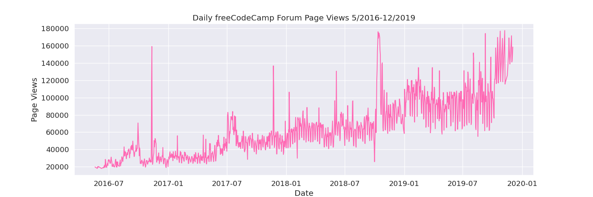
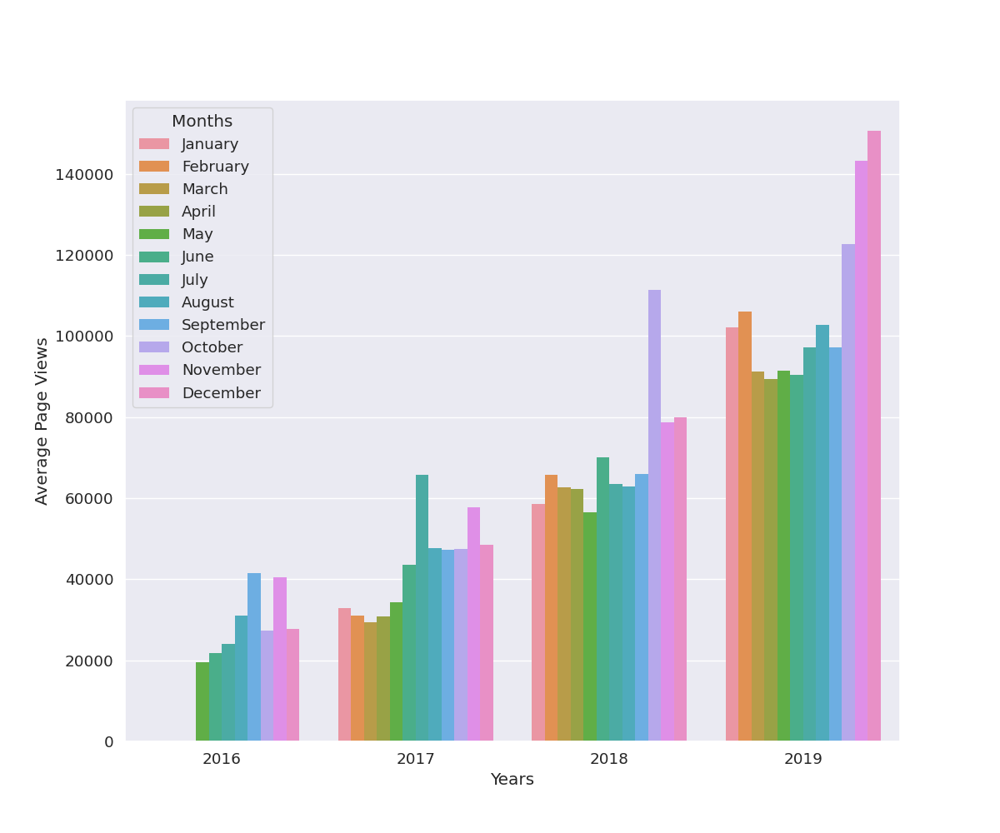
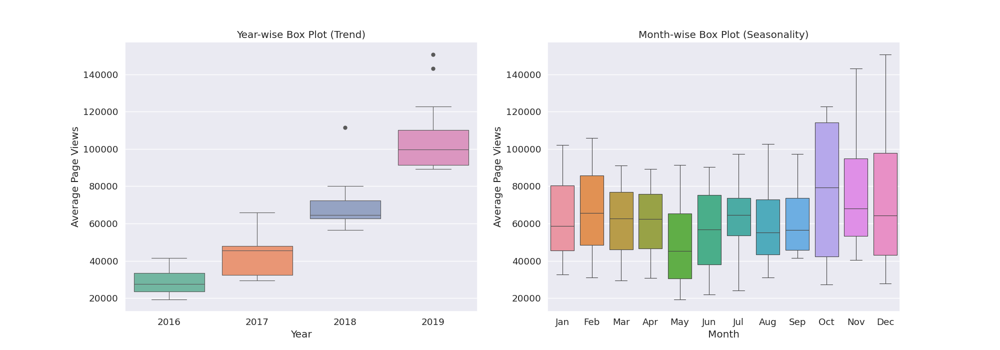

Python 數據分析小專案

這一集是 freeCodeCamp 'Data Analysis with Python' 課程中，使用 Python 練習的五個基本的數據分析，把 code 整理在這邊，並試著改得更精簡。並試著對圖表提出解釋。
使用的程式語言跟平台: Python, Google Colaboratory
使用套件: pandas, matplotlib, seaborn
平均值、變異數、標準差計算 (Mean-Variance-Standard Deviation Calculator)
這一題算是基礎數學題，跟 Python 基本功。沒有分析的成分，就不放 code 了。
人口統計數據分析 (Demographic Data Analyzer)
數據來源: Markelle Kelly, Rachel Longjohn, Kolby Nottingham, The UCI Machine Learning Repository
- How many people of each race are represented in this dataset? This should be a Pandas series with race names as the index labels. (race column)
- What is the average age of men?
- What is the percentage of people who have a Bachelor's degree?
- What percentage of people with advanced education (`Bachelors`, `Masters`, or `Doctorate`) make more than 50K?
- What percentage of people without advanced education make more than 50K?
- What is the minimum number of hours a person works per week (hours-per-week feature)?
- What percentage of the people who work the minimum number of hours per week have a salary of >50K?
- What country has the highest percentage of people that earn >50K?
- Identify the most popular occupation for those who earn >50K in India.
在這個數據集中，每一個種族的人數分別為多少。
要計算男性的平均年齡，做法是先選擇 “age” 這個欄位，再用 “sex” 欄位去做篩選，也就是包括 “Male” 的字串，接著取這些數值的平均，最後四捨五入到小數點後一位。
擁有學士學位的人口比例。先計算 “education” 欄位中每個不重複值的數量，再篩選 “Bachelors” ，得到擁有學士學位的人數，接著除以資料框的長度 aka 此次人口普查的總人口數。
這兩題可以一起回答。先做兩個 masks ，第一個是用 OR operator 篩選出有學士或碩士碩博士學位的人，第二個是篩選出年薪超過 50K 的人。
受過高等教育的人中，年薪超過 50K 的比例。那就是用 AND operator 篩選符合兩個 masks 的人，再除以受過高等教育的人數。
沒有受過高等教育的人中，年薪超過 50K 的比例。計算方式與前一題一樣，差別在於須在 mask 前面放一個 NOT operator 。
每週工作時數最少是多少。
每週工作時數最少的人中，還賺超過 50K 的人的比例。（這題是出來給人羨慕嫉妒的吧XD）
那在剛剛已經求出最少工作時數了，這邊可以直接拿來當篩選的值。篩選完的新資料框再篩選出年薪超過 50K 的人。計算方式跟前面的球比例是一樣的邏輯，就不再重複。
哪個國家的人年薪超過 50K 的人口比例最高。先用一個 for loop 計算每個國家年薪超過 50K 的人口比例，再用一個資料框放國家與年薪超過 50K 的人口比例，接著一個 max() 就能知道最多有錢人的國家是誰以及該比例了。
在印度年薪超過 50K 的人中，最收歡迎的職業。
醫療數據視覺化 (Medical Data Visualizer)
To be updated.
頁面瀏覽時間序列視覺化 (Page View Time Series Visualizer)
數據來源: freeCodeCamp 提供的網頁瀏覽數據
- Use Pandas to import the data from "fcc-forum-pageviews.csv". Set the index to the date column.
- Clean the data by filtering out days when the page views were in the top 2.5% of the dataset or bottom 2.5% of the dataset.
- Create a draw_line_plot function that uses Matplotlib to draw a line chart similar to "examples/Figure_1.png". The title should be Daily freeCodeCamp Forum Page Views 5/2016-12/2019. The label on the x axis should be Date and the label on the y axis should be Page Views.
- 在 2016/5/9 到 2019/12/3 之間 freeCodeCamp 網頁的瀏覽次數隨著時間逐漸上升。穩定成長。
- 2017年7月跟2019年10月左右，都有一個較大幅度的增加，也許當時辦了什麼活動，或是名人宣傳，讓知名度打開。
- 2016年、2017年、2018年在接近年底那邊，以及2017年中左右都有一個瞬間極高的瀏覽量(spike)。猜測這三年每年固定將近年底都有一個為期兩天的活動，或是其他定期的可以瞬間吸引大眾注意力的事件。
- Create a draw_bar_plot function that draws a bar chart similar to "examples/Figure_2.png". It should show average daily page views for each month grouped by year. The legend should show month labels and have a title of Months. On the chart, the label on the x axis should be Years and the label on the y axis should be Average Page Views.
- freeCodeCamp 網頁的瀏覽次數隨著年份穩定增加。跟折線圖的insight一樣。
- 春季月份的平均瀏覽量似乎會突然減少。
- 月平均可以清楚看到，折線圖發現的 spikes 發生在2016年11月、2017年7月、2017年11月、2018年10月。另外在2019年的10-12月也有增加的平均瀏覽量。
- Create a draw_box_plot function that uses Seaborn to draw two adjacent box plots similar to "examples/Figure_3.png". These box plots should show how the values are distributed within a given year or month and how it compares over time. The title of the first chart should be Year-wise Box Plot (Trend) and the title of the second chart should be Month-wise Box Plot (Seasonality). Make sure the month labels on bottom start at Jan and the x and y axis are labeled correctly. The boilerplate includes commands to prepare the data.
因為我是在 Google Colab 上運行，所以需要載入相關套件（i.e., google.colab）。
清理數據，不要極端值 aka 低於 2.5% 或是高於 97.5% 的單日瀏覽量。
透過時間序列的折線圖看趨勢  根據這張圖，我注意到以下 3 個 insights:
先做出資料框 再做圖  根據這張圖，我發現 3 個 insights:
直接拿上一題的資料框就可以做這題的圖了。  左邊的年平均很清楚網站每一年都在穩定成長。 右邊的月平均則發現，的確10月開始瀏覽量增加，到1、2月略減；3月到9月大致差不多，5月有最少的平均瀏覽量。
海平面預測 (Sea Level Predictor)
To be updated.